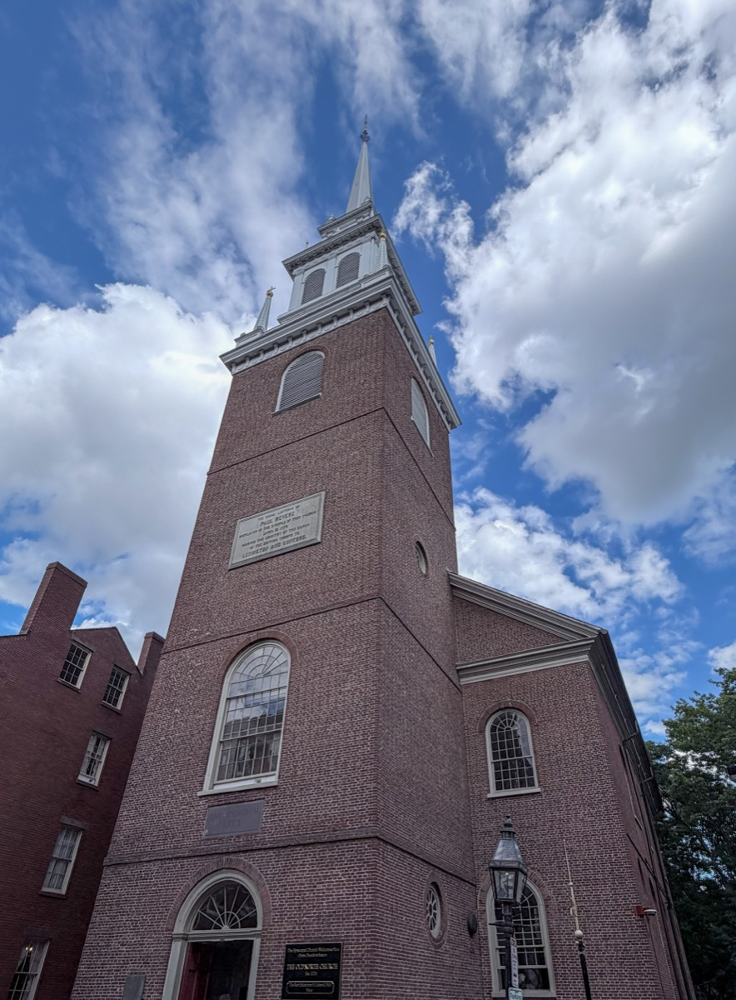
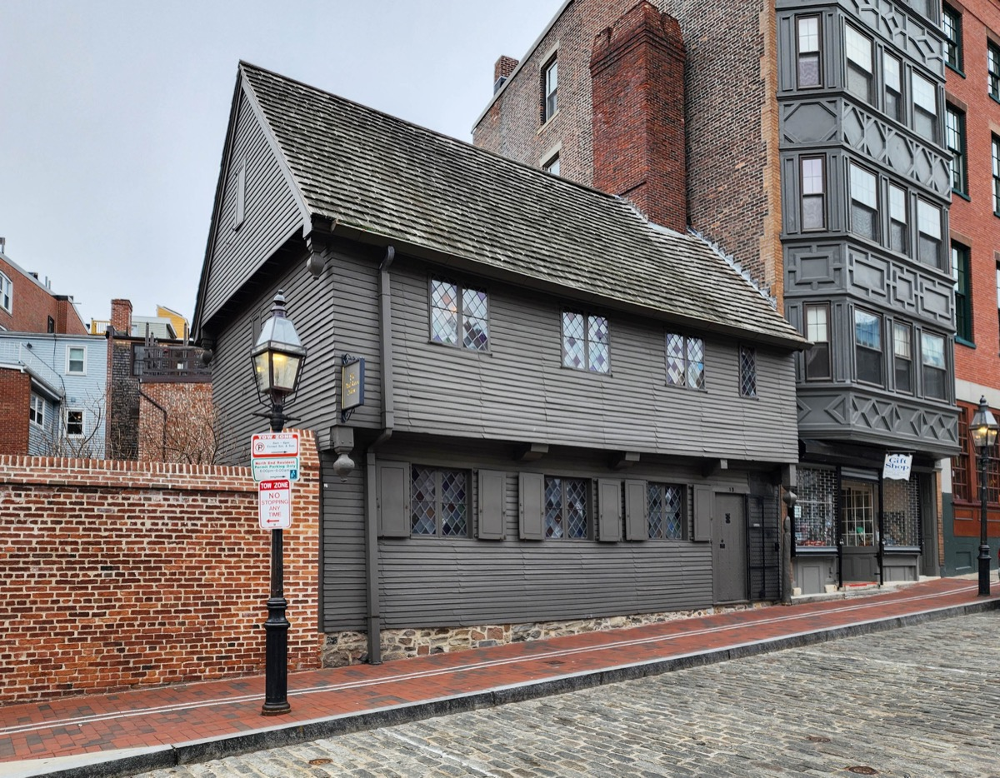
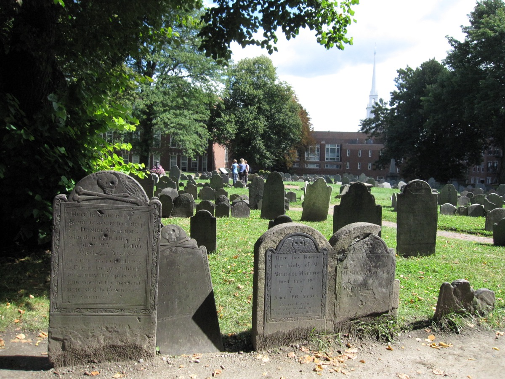
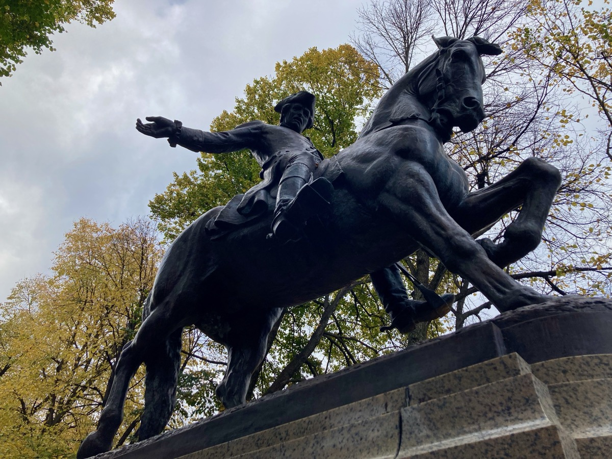
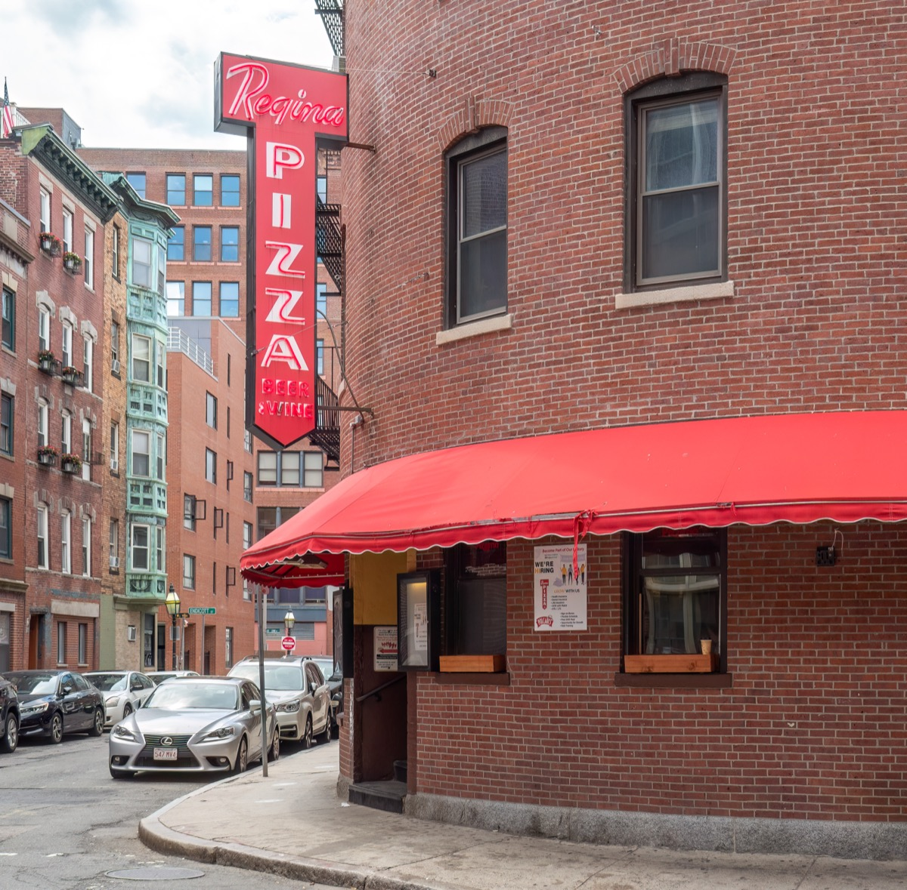
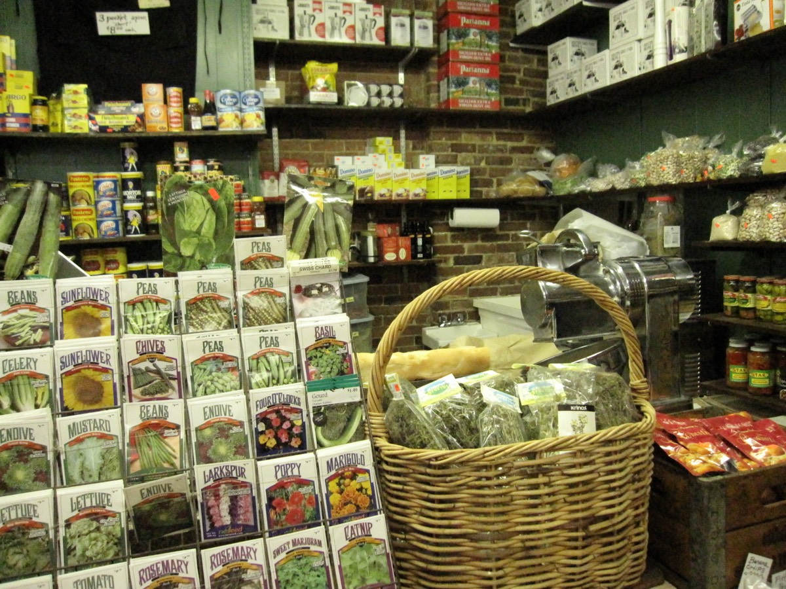

The North End is Boston's oldest residential neighborhood and its Italian district: about 0.36 square miles of narrow streets, nearly a hundred restaurants, cafés and bakeries, three Freedom Trail sites, and a summer calendar of saint's feasts that closes the streets nearly every weekend in July and August.
This guide covers the best things to do, where to eat, the cannoli debate, the historic sites, the quieter side streets, the feasts, and practical tips on cash, reservations and getting there.
The short answer
The 10 best things to do in the North End
01 · Sights & history
Freedom Trail sites and history
Three of the Freedom Trail's 16 stops are here, and the neighborhood's own history goes back to the 1630s.
The Old North Church

Built 1723, the oldest surviving church in Boston and the site of the "one if by land, two if by sea" signal. The garden behind is free and quiet.
Paul Revere's House

Built around 1680, the oldest surviving house in downtown Boston. Revere left from here on his ride. North Square is one of the prettiest corners in the neighborhood.
Copp's Hill Burying Ground

Boston's second-oldest cemetery, established 1659, on the highest point in the North End. The harbor view to the Navy Yard is one of the best free views around.
The Skinny House
The narrowest house in Boston, about 10 feet wide, reportedly built out of spite in the 1870s to block a brother's view.
The Great Molasses Flood marker
On January 15, 1919, a burst molasses tank sent a wave through the neighborhood, killing 21. A small plaque marks the site, next to bocce courts.
St. Stephen's Church and the Paul Revere Mall

The only surviving Bulfinch church in Boston. Across the street, the Prado's equestrian statue faces the Old North Church steeple directly.
Christopher Columbus Park and the waterfront
Where the North End goes to sit after dinner. Wisteria trellis, a fountain, and the Harborwalk continuing in both directions.
02 · Food & drink
Where to eat in the North End
Nearly a hundred restaurants, and most are fine. These are the ones that get repeat visits.
Neptune Oyster
A 40-seat raw bar many consider the best in Boston. Go at 3pm on a weekday, or alone for a bar seat.
Regina Pizzeria

On the same corner since 1926, original brick oven. Thin, charred, slightly greasy in the way North End pizza should be.
Giacomo's
The restaurant with the line down the block. Big plates of seafood fra diavolo at prices that haven't kept up. Weeknights before 6pm are the answer.
Galleria Umberto
The same short menu since 1974: Sicilian pizza, arancini, panzarotti. Closes when the food runs out, usually by 1:30pm.
Mamma Maria
A townhouse on North Square, handmade pasta and a Northern Italian menu. One of the few North End reservations that's honored.
Caffè Vittoria

Opened 1929 as the first Italian café in Boston. Pressed-tin ceilings, antique espresso machines, a cigar bar downstairs.
Salumeria Italiana and Polcari's

Imported cheeses and cured meats, and coffee, spices and dried goods from wooden barrels since 1932.
The full ranking is in the best restaurants in the North End.
03 · The cannoli debate
Mike's vs Modern vs Bova's
Three bakeries within a few hundred feet of each other, and a rivalry every Bostonian has an opinion about.
Modern Pastry
Filled to order, so the shell stays crisp and the ricotta is lighter than Mike's. Smaller, cheaper, and the line moves faster.
Mike's Pastry
Enormous, pre-filled, about twenty flavors. The Florentine and pistachio are the ones to get. Strict about cash.
Bova's Bakery
Open since 1932, the only place for an arancini at 2am. The spinach calzone gets less attention than it should.
The right answer is to try all three in one walk. It takes about forty minutes and is a good excuse to see Salem Street as well as Hanover.
04 · Side streets
Side streets and hidden spots
Salem Street: the residential spine parallel to Hanover, quieter and better for a slow walk. Bova's, Neptune Oyster, Polcari's and the Old North Church at the end.
Prince Street: mostly residential, with alleys and courtyards that still look like fifty years ago.
All Saints Way: a narrow alley off Battery Street lined floor to ceiling with images of saints. Private property; the gate is only sometimes open.
The Rose Kennedy Greenway: the park that replaced the elevated highway, with fountains, a carousel and food trucks in summer.
05 · Feasts & events
North End feasts and events
From late June through August, the North End's Italian societies hold religious feasts nearly every weekend. Streets close, a statue of the saint is carried in procession, and the blocks fill with sausage and peppers, fried dough and zeppole.
The two biggest are St. Anthony's Feast on the last weekend of August, the largest Italian religious festival in New England, and the Fisherman's Feast in mid-August, ending with the "flight of the angel."
06 · Tips
Tips for a first visit
Bring cash. Mike's Pastry, Giacomo's, Galleria Umberto and Caffè Vittoria are cash only.
Go on a weeknight. Friday and Saturday mean 30–60 minute waits; Tuesday through Thursday, minutes.
Split the visit. Historic sites in the morning, restaurants in the evening.
Don't drive. Streets are narrow and resident-only parking covers most of the neighborhood.
Walk one street over. Salem and Prince have most of the character and a fraction of Hanover's foot traffic.
FAQ
North End Boston: common questions
What is the North End in Boston known for?
Italian food, the Freedom Trail and being the city's oldest residential neighborhood. Nearly 100 restaurants and bakeries, the Old North Church, Paul Revere's House, Copp's Hill, summer feasts and the Mike's-versus-Modern cannoli rivalry.
Mike's Pastry or Modern Pastry: which cannoli is better?
Modern fills to order so the shell stays crisp and the ricotta is lighter. Mike's is larger, sweeter and comes in about twenty flavors. Bova's on Salem Street is open 24 hours and is the local's pick. Try all three.
How do you get to the North End?
Orange or Green Line to Haymarket, then a five-minute walk up Hanover Street. Or the Blue Line to Aquarium and a ten-minute walk along the waterfront. Don't drive.
How long should you spend in the North End?
Two hours for a walk, the historic sites and a pastry. A full evening for dinner, a café and the waterfront.
Do North End restaurants take reservations?
Many famous ones don't, including Giacomo's, Neptune Oyster and Galleria Umberto, and several are cash only. Mamma Maria, Bricco, Carmelina's and Prezza take reservations.